User manual
LightDori guide
From your first patch list to the console handoff. Written for lighting designers, production electricians and shop teams — no LightDori experience assumed.
1. What LightDori does
LightDori is a desktop workspace for lighting production data. You keep one fixture list, and LightDori turns it into the patch, the paperwork, the magic sheet and the exports each department needs.
It runs on Windows and macOS, works offline, and is built for theatre, touring and rental-shop work.
The core loop
- Build or import the fixture list in the Sheet.
- Patch universes and addresses, and clear the error list.
- Print a patch document and a magic sheet to the PDF Store.
- Keep Vectorworks in step, and hand the data to the console.
What is in the app
- Sheet — the fixture table, with filters, presets, error checking, work notes, DMX tools and revision compare.
- Patch Document — hookups, schedules and focus charts laid out for print.
- Magic Sheet — one cell per system, channels placed on the stage plan.
- Scripts / Cue Sheet — cue markers on the script and the cue sheet that follows them.
- Moodboard — reference boards, page per scene.
- Colour, Gobo, GDTF, Cable, Calendar, Workflow — libraries and planning tools.
- Console and PDF Store on the left rail.
2. Getting started
Signing in
LightDori asks for your account the first time it opens. Enter your email and password and press Sign In, or choose Create an Account. Tick Remember me to stay signed in on that computer.
Your licence is confirmed online, but LightDori keeps working offline for about a week after the last successful check.
The hub
After signing in you land on the hub: Open file for an existing .ld project or a data file, New file for the guided setup, your Recent files on the right, and news from us below them.
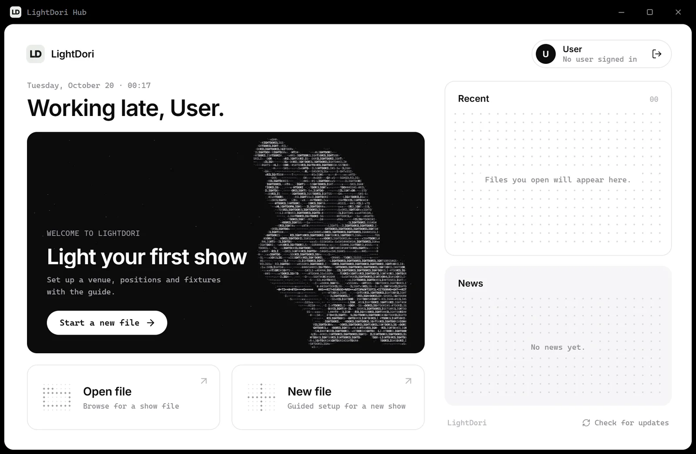
The project overview
A project opens on its overview. Click the title to rename the show and fill in the credits (venue, director, lighting design and so on) — the patch documents and the magic sheet use them for their header block. Drop the show poster on cover image and a plot or ground plan on drawing.
The large cards open the main workspaces — Sheet, Scripts / Cue Sheet, Moodboard, Magic Sheet — and the list beside them opens Colour, Gobo, GDTF, Cable, Calendar and Workflow. Each open project gets its own tab at the top of the window.
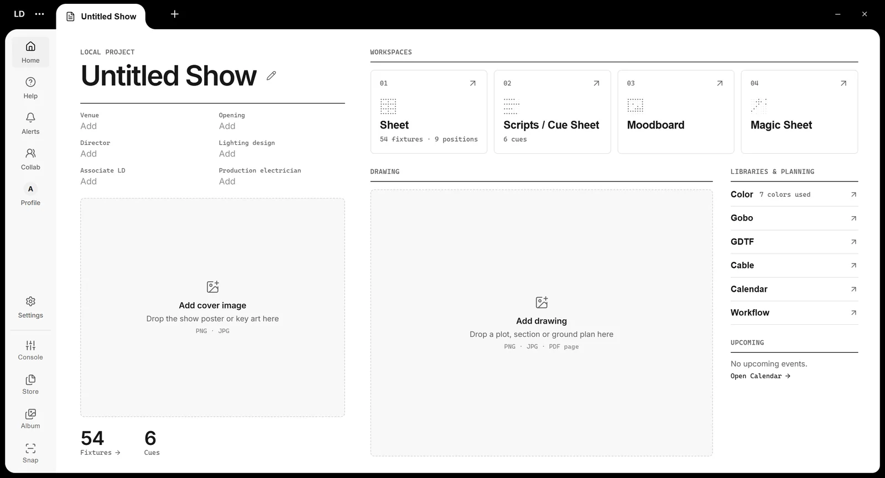
The left rail
- Home, Help, Alerts — back to the overview, help for the screen you are on, and warnings about your data.
- Collab, Profile, Settings — shared sessions, your account and preferences.
- Console, Store, Album, Snap — the console link, the PDF Store, and screen captures.
Saving
A project is one .ld file. Ctrl + S saves, Ctrl + Shift + S saves a copy, Ctrl + O opens (use Cmd on macOS).
Auto save is available in Settings, but save by hand before big imports, merges and exports.
3. Sheet
The Sheet is the fixture table everything else reads from: the patch documents, the magic sheet, the Vectorworks exchange and the console.
Columns come from what you imported, so a sheet from an MVR looks different from one built from a shop spreadsheet. Typical columns are Channel, Position, Unit Number, Purpose, Device Type, Wattage, Colour, Focus, Dimmer, Universe and Address. Position tabs along the top show one position at a time.
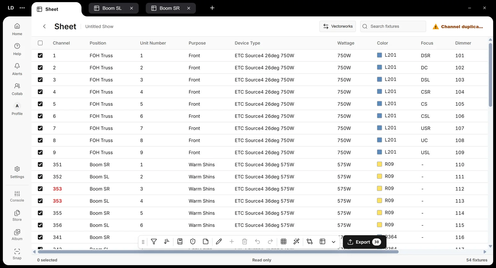
The tool dock
- Filter and Sort — show matching rows only, order by any column.
- Presets — save the current columns, filters and sort order and come back to them.
- Error checking — duplicate channels, addresses and dimmers, address overflow, missing channel, position, instrument type or address. Each check is Off, Warn or Error.
- Work notes — a note per fixture, with a done tick.
- Edit — unlocks the table; Add fixture and Delete selected rows work while it is on.
- Undo / Redo, Universe map, Auto universe, Revision compare and Live fixture summary.
- Export — data file, patch document PDF, XML or MVR. The badge counts the ticked rows.
When the window is narrow, the tools that do not fit move into the ⋯ menu at the end of the dock.
Selecting, ticking and editing
- Click a row to select it; Ctrl adds rows, Shift selects a range.
- The checkbox decides what goes into an export. The header checkbox ticks every visible row, so filter first.
- With Edit on, double-click a cell to edit it; Enter commits, Esc cancels. Colour and gobo cells open a picker instead.
- Universe, Address and Absolute Address are one DMX patch: change one and the others follow, as in Vectorworks.
Adding fixtures
Turn on Edit and press Add fixture. Fill in Fixture (channel, purpose, position, unit, colour, dimmer) and DMX patch (universe and address — type 5 or 2.005); everything else is under More fields.
Universe map and Auto universe
Auto universe patches a run of fixtures: choose the target (selected, visible, unpatched or all rows), a start universe, a start address and an offset, then Apply. Check the result in Universe map — used, free, fixtures and conflicts per universe, with every channel drawn on a 512 grid.
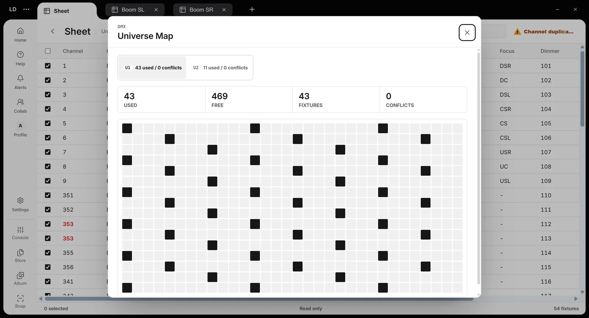
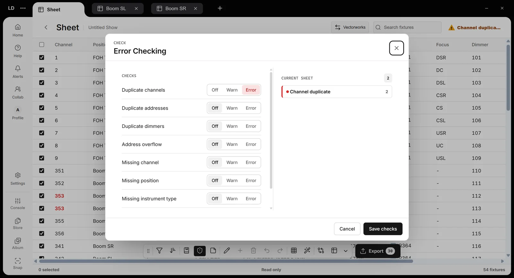
Revision compare
Set current as baseline before a cue-to-cue or a production meeting. Later, Revision compare lists every changed, added and removed fixture, with each changed field shown before and after.
4. Patch Document
The paperwork the shop and the booth hold: a hookup, a schedule or a focus chart, printed straight to the PDF Store.
- Tick the rows you want in the Sheet (filter first for one position).
- Choose Export → Patch document PDF.
- Pick a Schedule preset, or choose and order the columns yourself.
- Set the page and the header, press Refresh to update the preview.
- Press Export PDF. The document folds into the Store.
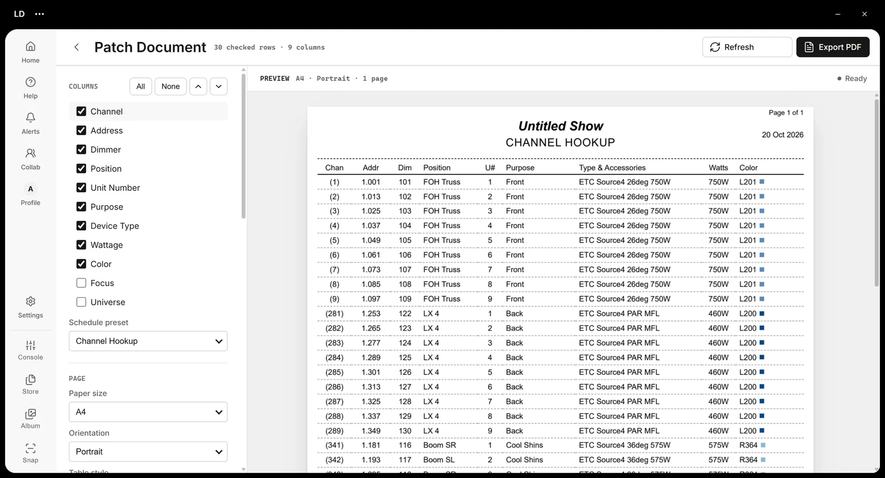
Schedule presets
| Preset | What it prints |
|---|---|
| Channel Hookup | One list in channel order. |
| Instrument Schedule | A table per position, sorted by unit number. |
| Dimmer Hookup | One list in dimmer order (DMX address when the sheet has no dimmers), then channel. |
| Address Hookup | A table per DMX universe, in address order. |
| Focus Chart | A table per position with unit, channel, purpose, focus, colour and gobos. |
| Custom | The columns you chose, in the sheet's order. |
Page and style
- Paper A4, Letter, A3 or Legal, portrait or landscape.
- Style — Classic, Grid or Compact. Number columns are centred.
- Zebra rows and a heavier row separator every few rows; font size 7–14 pt.
The header block
Show title and document title in the middle; director, venue and city on the left; page and date, then designer, phone and email on the right — filled from the project credits. Add a logo, a note, or switch the header and the summary line off.
The preview waits for Refresh; the button lights up when your settings are newer than the preview.
5. Magic Sheet
A magic sheet is a picture of the rig: one cell per system, channels placed on the stage plan and pointing where their light goes. The canvas is the printed page.
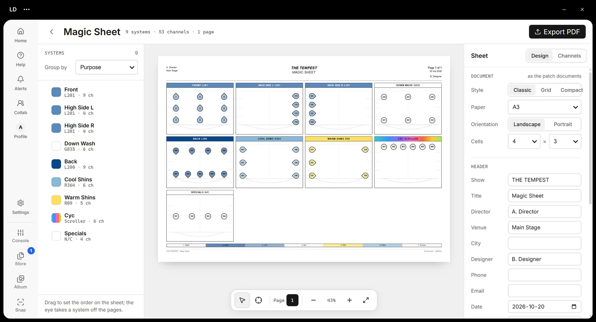
How it is built
- Cells come from Group by — Purpose by default, or Position, Colour, Instrument or Focus — in channel order.
- Each cell's title bar takes the gel's colour; scrollers and LEDs get a spectrum.
- Channels are placed from the sheet: Focus areas (DSL, CS, USR… or A1, A2…), then plot X / Y, then the system's kind — shins and booms in two columns, back light pointing down, box booms angled in.
- The page header, the type and the footer are the patch documents' own (Classic, Grid or Compact).
Editing
- Drag a channel to move it, or nudge it with the arrow keys. With the Aim tool (A), drag from a channel to point it.
- Click a cell to set its name, gel, master and sub channel, layout (Auto, Sides, Wash, Row, Arc), bubble shape and size, and the direction of all its channels.
- Back to auto and Place all again undo hand placement.
- Drag systems in the list to reorder the cells; the eye takes a system off the pages.
Stage plan and pages
Every cell shows a generic plan until you load your own: Ground plan takes an image or the first page of a PDF and draws it in grey, with strength, scale and position controls. Set the paper, orientation and cells per page in the inspector with nothing selected; Export PDF prints every page to the Store.
6. Script & cue sheet
Put the script on one side and the cue sheet on the other, and mark cues where they happen on the page.
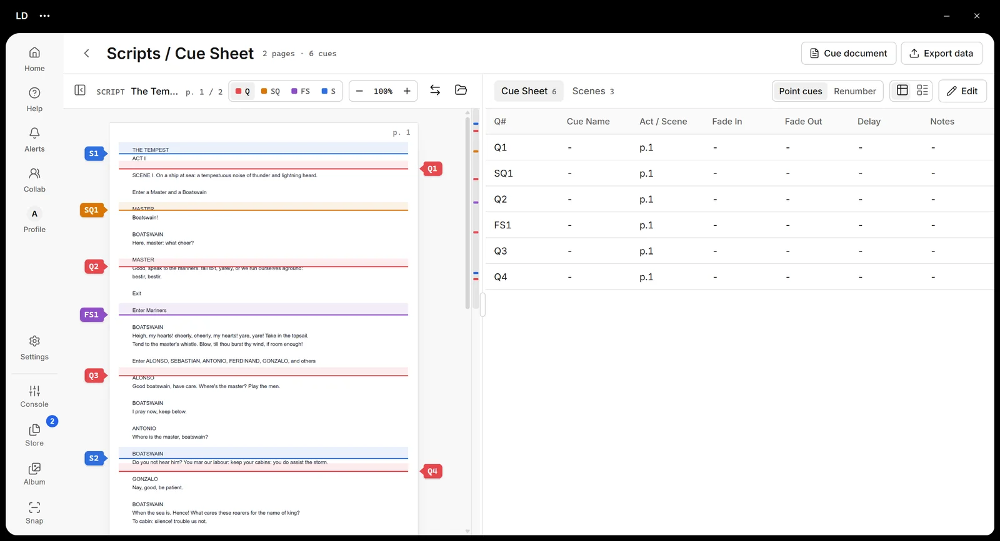
- Import a script as PDF, Word (
.docx) or text. Markers snap to the line you click. - Choose the marker type — Q lighting, SQ sound, FS follow spot, S scene — and click the page.
- New cues get point numbers (Q1.5) between existing ones; Renumber numbers them in order instead.
- Click a marker to edit its number, type and note; drag it to move; Del removes it.
- The cue sheet follows the markers and each row shows its marker. Switch between Cue Sheet and Scenes, table and card views.
Cue document prints the cue sheet with the patch documents' layout tool; Export data writes an ETC ASCII (.asc) file for an Eos-family console.
7. Moodboard
Reference boards for the visual conversation, one page per scene if you like.
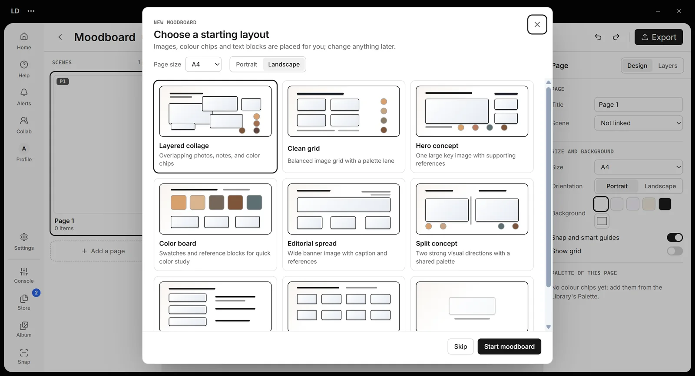
- Pages sit in the column on the left; link a page to a script scene and it carries the scene label.
- The dock at the bottom holds the tools; its Library slides up with elements, text styles, uploads, the palette and templates.
- The inspector on the right follows the selection: photo adjustments and filters, text, shapes, drawing, arrange and layers.
- Pick a colour from a photo and LightDori shows the closest Lee and Rosco gels.
- Export the page as PNG, or every page as a PDF to the Store.
8. Colour, gobo & fixture libraries
Colour
Search Lee and Rosco gels by code, name or hex, or show only the colours in use. A swatch shows its data and the nearest colours from the other brand — handy when a shop is out of stock.
Gobo
Browse gobo folders, preview the patterns and assign them to fixture slots. Assigned gobos show as thumbnails in the sheet and print in the patch document.
GDTF, Cable, Calendar
Check modes, channel layouts and 3D models in the GDTF catalogue or your own files; plan power and DMX runs on the cable canvas; keep load-in, focus, tech and strike dates in the calendar.
9. Workflow & PDF Store
Every PDF you export lands in the Store on the left rail instead of a folder. Click a thumbnail to page through it, download or delete it; double-click the name to rename it.
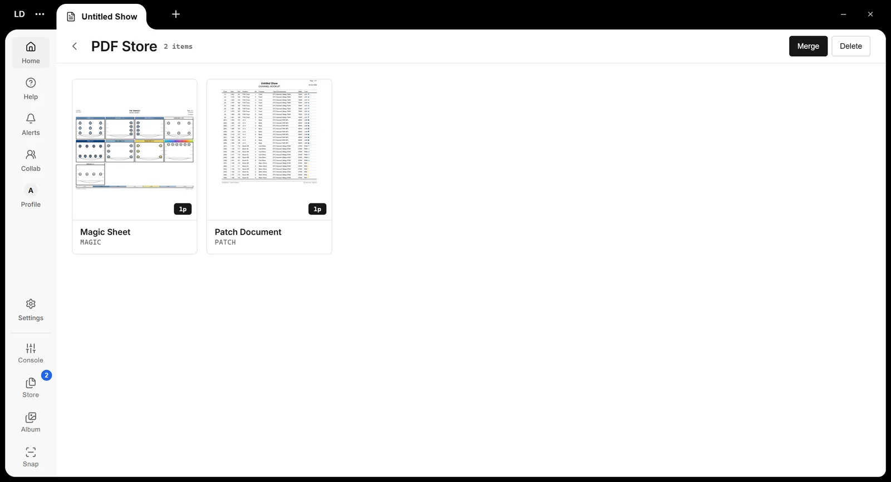
Merge builds one production pack: press Merge, click the PDFs in order, then confirm. The Workflow canvas maps the paperwork — each node is a document and shows whether it has been produced yet.
10. Vectorworks sync
LightDori and Vectorworks keep one fixture list in step through a shared exchange file — no network, no copy and paste.
| System | Exchange file |
|---|---|
| Windows | %USERPROFILE%\Documents\LightDoriExchange\ld_vw_exchange.json |
| macOS | ~/Documents/LightDoriExchange/ld_vw_exchange.json |
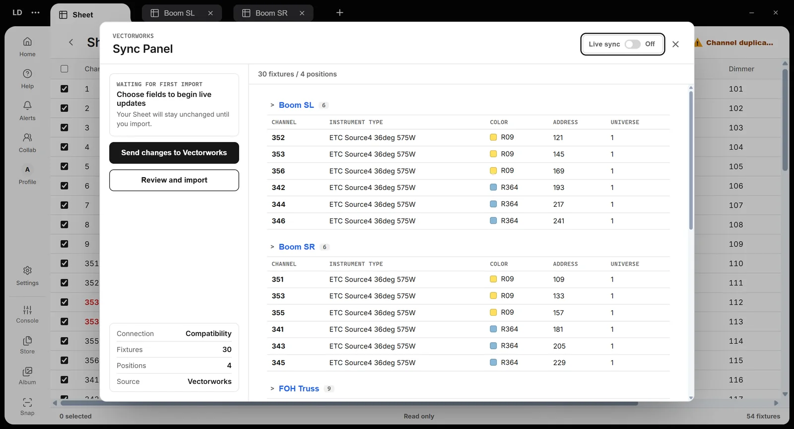
First import
- Open Vectorworks from the top right of the Sheet.
- Press Review and import.
- Choose Merge (update matching fixtures, add new ones) or Replace Sheet, and tick the fields to bring in.
- Press Import. Fields land in the sheet's own columns — a Device Type column never splits in two.
Live sync
Turn Live sync on and edits travel both ways a moment after you make them. Send changes to Vectorworks pushes the sheet by hand. Universe, Dmx Address, Absolute Address and Universe/Address are one patch on both sides: change any of them and the drawing keeps the new patch.
Fixtures are matched by a hidden unique ID. A fixture that arrives without one is skipped — re-export it from Vectorworks.
When it does not work
- Connection says Compatibility — the LightDori plug-in is not running in Vectorworks. Install it and restart Vectorworks.
- “Exchange file not found” — nothing has been written yet. Export once from Vectorworks.
- A change does not show in the drawing — restart Vectorworks after updating LightDori so it loads the new plug-in script.
11. Console connection
Connect over the network to pull a patch from the console, push one to it, or read the cue list.
| Console | Protocol | Ports | Notes |
|---|---|---|---|
| ETC Eos / Ion / Nomad | OSC | 8000 / 8001 | Pull patch and cue data |
| grandMA2 | Telnet | 30000 | Pull and push patch |
| grandMA3 | OSC | 8000 / 8001 | Patch pull not available |
Setting up an Eos console
- Open Setup → System → Show Control → OSC.
- Enable OSC RX and OSC TX.
- Set OSC UDP RX Port to 8000 and OSC UDP TX Port to 8001, and note the console's IP address.
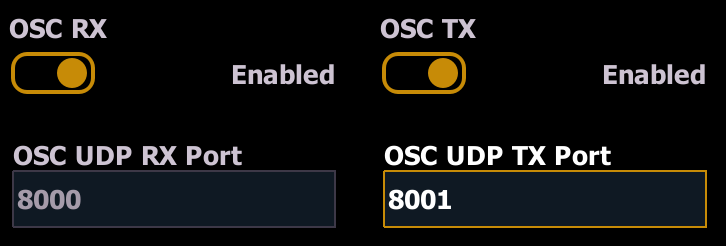
Setting up a grandMA console
Open Setup → Console → Global Settings and set Telnet to Login Enabled.
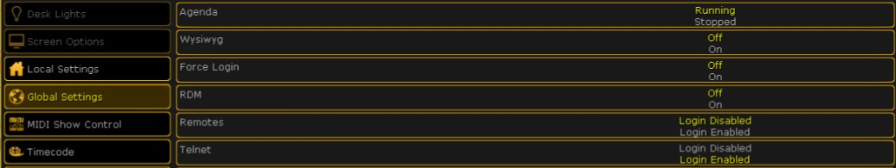
Connecting from LightDori
Open Console from the left rail, choose the console type, enter its IP, keep the default ports and press Connect. The Patch tab pulls or sends the patch, Cue Sheet lists sequences and cues, and Command sends raw commands.
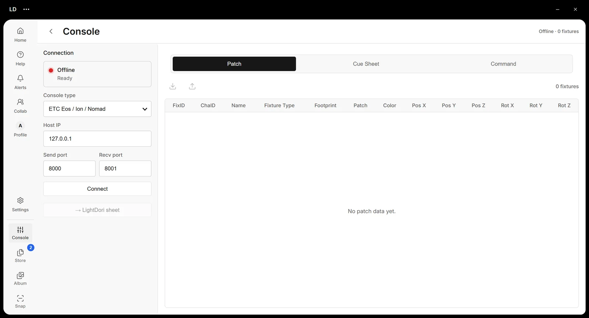
Pushing a patch to Eos is not supported yet — pull from Eos, and use the ASCII (.asc) export to go the other way.
12. Import & export
Drag a file onto the window, or use the file menu.
What you can bring in
- CSV, Excel (
.xlsx,.xls,.xlsm) — the first worksheet. - JSON, XML — including grandMA2 XML and LightDori exports.
- MVR — fixtures with their GDTF definitions.
- ASCII (
.asc) — Eos show files; choose patch, cue data or both. - LightDori project (
.ld).
Importing over a sheet that already has fixtures asks first whether to replace it.
What you can send out
- CSV, Excel, XML, text for other software.
- MVR back to Vectorworks — original 3D and GDTF assets are kept.
- PDF — patch documents, magic sheets, cue documents and moodboards, to the Store.
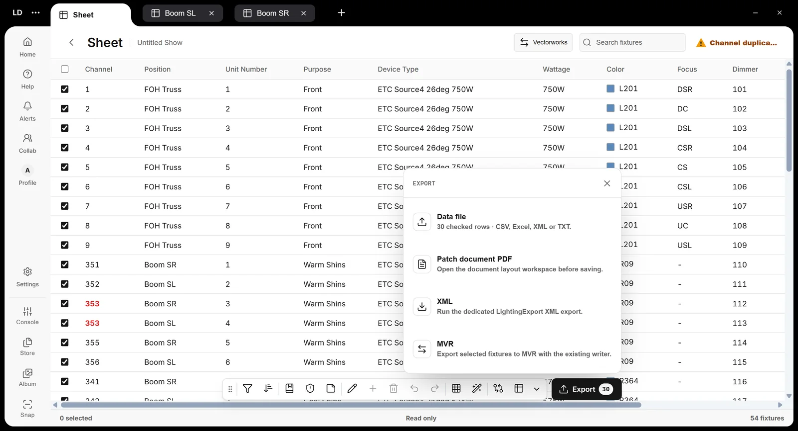
Exports include only ticked rows. If an export comes out empty, nothing was ticked.
13. Settings
- Theme — light or dark.
- Auto save and its interval (1–60 minutes).
- Tooltips, confirm before deleting, and remember window size and position.
Nothing sticks until you press Save settings.
14. Account & collaboration
Profile on the left rail changes your display name and photo, shows your licence, and signs you out. Licence keys look like ABCD-1234-EFGH-5678.
Collab creates shared sessions and invites people by email as owner, editor or viewer. While a session is active the project lives with the session, and earlier versions can be restored from its history.
15. Troubleshooting
- An export is empty. No rows were ticked.
- Two fixtures share an address. Open Universe map or Error checking.
- A CSV will not open. Save it as UTF-8 or Excel.
- The preview looks old. Press Refresh.
- Columns run off the page. Use landscape, a smaller font, or fewer columns.
- The console will not connect. Same network, the right IP, OSC or Telnet enabled on the console.
- Something looks stale after an update. Quit LightDori completely and open it again.
Email xkxh4789@gmail.com with your operating system, what you were doing and the exact wording of any message. Screenshots help a lot.